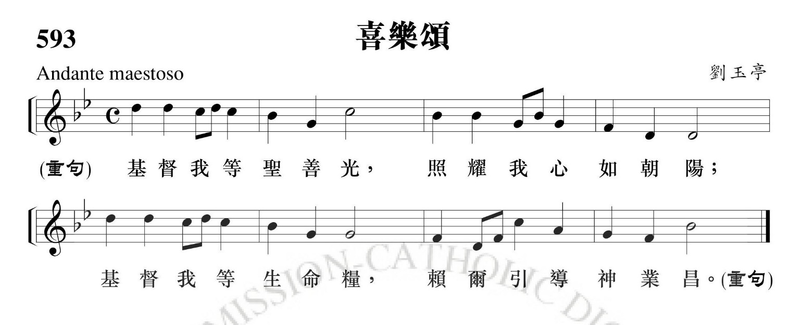
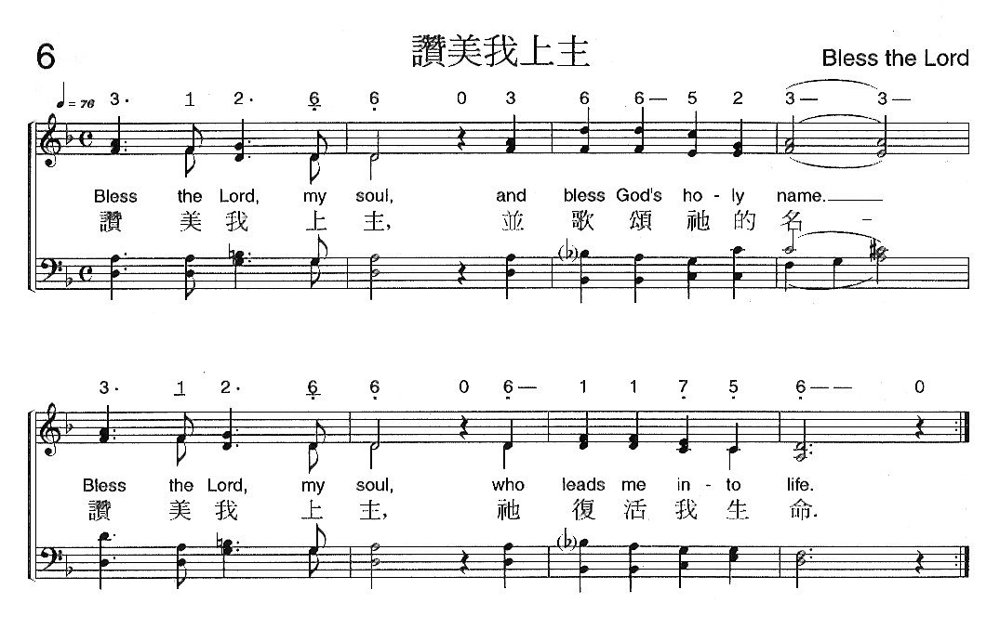
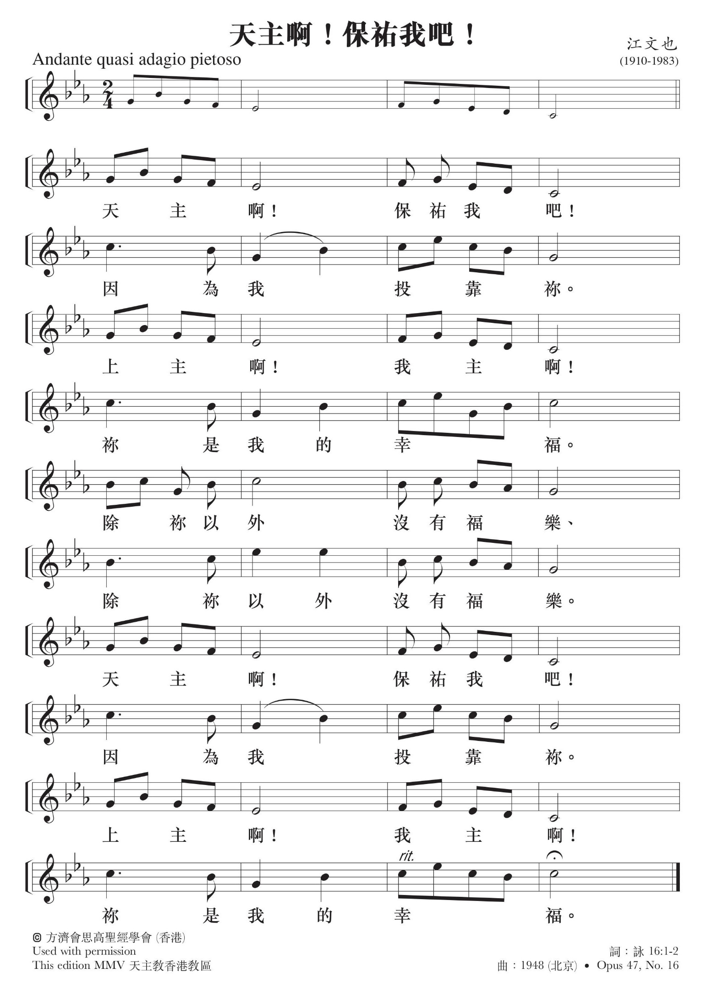
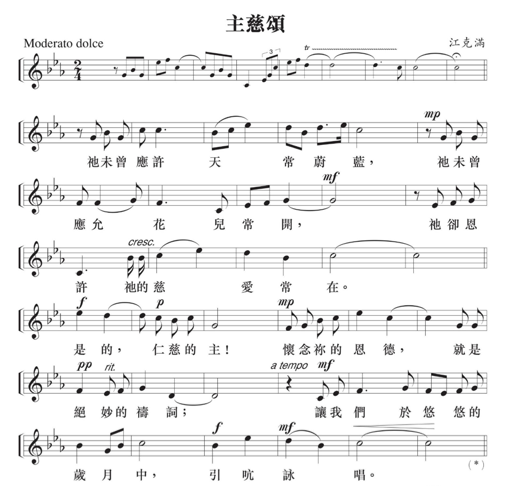
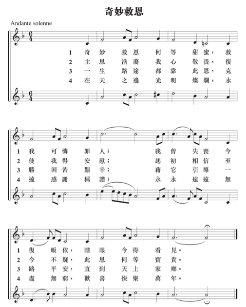

守靈祈禱
（第一式）



家屬分享
請起立：請大家一起詠唱「主慈頌」

致候
主禮：因父、及子、及聖神之名。
眾：亞孟。
主禮：各位親友，天主是我們的希望。願他賜給你們安慰與平安，並願生命之主耶穌基督常與你們同在。
眾：也與你的心靈同在。
主禮：家庭的愛、朋友的共融，使我們相聚一起。尤其我們相信在基督內，愛是永恆的。我們與黃信章弟兄的情誼，是不會因他的離世而終結的。今晚我們在主耶穌基督內懷念黃信章弟兄，同時，也與他一起祈禱。
我們堅信天主不會忘記人的善行，他也寬恕我們的過犯。讓我們求主收納 黃信章弟兄，安息在基督懷中。請大家祈禱：（全體默靜片刻）
祈禱
主禮：上主天主，我們今晚紀念黃信章弟兄；他的離去，反映出我們人類共有的處境，以及人世的短暫。但你藉基督給我們啟示，死亡不是終結，更不會奪去你在人身上的種種恩寵。
天父，我們既然是你的子女，分享了你聖子的救恩，得到永生的希望，求你收納 黃信章弟兄，進入你聖子預許的天鄉，並求你以基督復活的信德，安慰我們、堅強我們，使我們善度此生，來日與黃信章 弟兄同享復活的光輝。因我們的主耶穌基督，你的聖子，他和你及聖神，是唯一天主，永生永王。
眾：亞孟。
聖道禮儀
讀經
恭讀聖保祿宗徒致格林多人後書 5:1, 6-9
弟兄姊妹：我們知道：如果我們這地上帳棚式的寓所拆毀了，我們必由天主獲得一所房舍，一所非人手所造，而永遠在天上的寓所，所以不論怎樣，我們時常放心大膽，因為我們知道，我們幾時住在這肉身內，就是與主遠離──因為我們現今只是憑信德往來，並非憑目睹──我們放心大膽，是為更情願出離肉身，與主同住。為此我們或住在或出離肉身，常專心以討主的喜悅為光榮。－
上主的話。
眾：感謝天主。
答唱詠 (詠27:1,4,7-9,13-14)
領：上主是我的光明，我的救援。
答句：上主是我的光明，我的救援。
領：上主是我的光明，我的救援，我還畏懼何 人？上主是我生命穩固的保障，我還害怕 何人？
答句：上主是我的光明，我的救援。
領：我有一事祈求上主，我要懇切請求此事： 使我一生的歲月，常居住在上主的殿裏， 欣賞上主的甘飴慈祥，瞻仰上主聖所的堂 皇。
答句：上主是我的光明，我的救援。
領：上主，求你俯聽我的呼號，上主，求你憐 憫我，垂允我。上主，我在尋求你的儀 容。求你不要掩住你的臉面。
答句：上主是我的光明，我的救援。
領：我深信在此活人地區，定會享見上主的幸 福。你要鼓起勇氣，期望上主，你要振作 精神，期望上主。
答句：上主是我的光明，我的救援。
福音前歡呼（按當時情況，也可省略）
領：亞肋路亞。
眾：亞肋路亞。
領：主說：「我就是復活、就是生命，信從我的 人，必永遠活著」（若11:25-26）。
眾：亞肋路亞。
福音
恭讀聖路加福音12:25-34
那時候，耶穌對他的門徒說：「你們中誰能運用思慮，使自己的壽數增加一肘呢？如果你們連極小的事還做不來，為甚麼要思慮別的事呢？你們看看百合花，是怎樣生長的：它們不勞作，也不紡織；可是，我告訴你們：連撒羅滿在他極盛的榮華時所披戴的，也不如這些花中的一朵。田野間的野草，今天還在，明天就投入爐中，天主尚且這樣裝飾，何況你們呢！小信德的人啊！你們不要謀求吃甚麼，喝甚麼，也不要憂愁掛心，因為這一切都是世上的外邦人所尋求的，至於你們，你們的父知道你們需要這些。你們只要尋求他的國，這些自會加給你們。
「你們小小的羊群，不要害怕！因為你們的父喜歡把天國賜給你們。要變賣你們所有的來施捨，為你們自己備下經久不朽的錢囊，在天上備下取用不盡的寶藏；那裏盜賊不能走近，蠹蟲也不能損壞，因為你們的寶藏在那裏，你們的心也必在那裏。」－
上主的話。
眾：基督，我們讚美你。
禱詞
主禮：我們相信耶穌基督在十字架上為我們犧牲，又從死者中復活，賜給我們永生，現在讓我們誠心地向他呼求。
領：上主，你是復活，是生命，我們要因你
而生活。求你垂憐。
眾：上主，求你垂憐。
領：主，我們相信你的許諾，我們將永遠肖
似你。求你垂憐。
眾：上主，求你垂憐。
領：主，你來是為消滅罪惡與死亡。
求你垂憐。
眾：上主，求你垂憐。
領：主，你拯救我們脫免死亡的恐懼。
求你垂憐。
眾：上主，求你垂憐。
領：主，你曾在十字架上為我們犧牲，
並在光榮中復活。求你垂憐。
眾：上主，求你垂憐。
領：主耶穌，你是溫良的善牧，你帶領我們跨越死亡的幽谷。求你把永遠的平安賜給 黃信章弟兄。求你垂憐。
眾：上主，求你垂憐。
領：主耶穌，你憐愛哀慟和悲傷的人。求你安慰黃信章弟兄的家人和親友，使他們能在希望中繼續人生的路程，來日在天鄉重逢。求你垂憐。
眾：上主，求你垂憐。
主禮：各位親友，我們真正的家鄉是在天上。讓我們按照耶穌基督的教導，向在天之父祈禱：
全體：我們的天父，願你的名受顯揚；願你的國來臨；願你的旨意奉行在人間，如同在天上。求你今天賞給我們日用的食糧；求你寬恕我們的罪過，如同我們寬恕別人一樣；不要讓我們陷於誘惑，但救我們免於凶惡。
結束祈禱
主禮：主耶穌，你是人類的救主；你曾甘願交付自己，經歷死亡，好使我們獲得拯救，出死入生。
我們謙誠地求你，以你的憐憫收納
黃信章弟兄，使他安息在你的懷中，
並安慰他的親友。
主，唯獨你永遠常在，你的慈愛永無窮盡，你藉著死亡為人開啟了永生之門。求你以你的仁慈和寬恕，賜給黃信章弟兄快樂、光明與平安的天上居所。在那裏，你和聖父及聖神，永享光榮，至於無窮世之世。
眾：亞孟。
祝禱
主禮：凡在主內蒙召的人是有福的，願他們在勞苦後得到安息，他們的善行常伴隨著他們（參閱默14:13)。
（主禮可向靈台伸手祝禱）
主禮：上主，求你賜給黃信章弟兄永遠的安息。
眾：並以你的永光照耀他。
主禮：願諸聖接他到天主台前，與諸信者一起， 永享安息。
眾：亞孟。
禮成詠 「奇妙救恩」

Revision 5
Last
Modified: Sunday, January 7, 2024